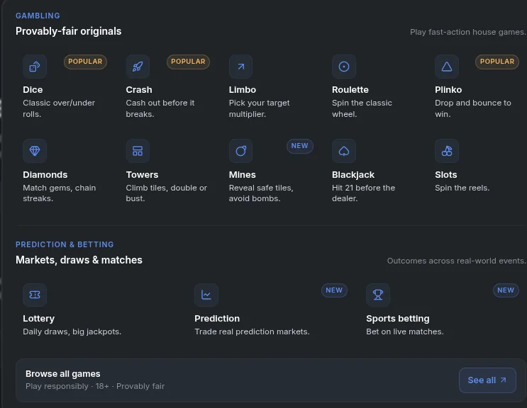
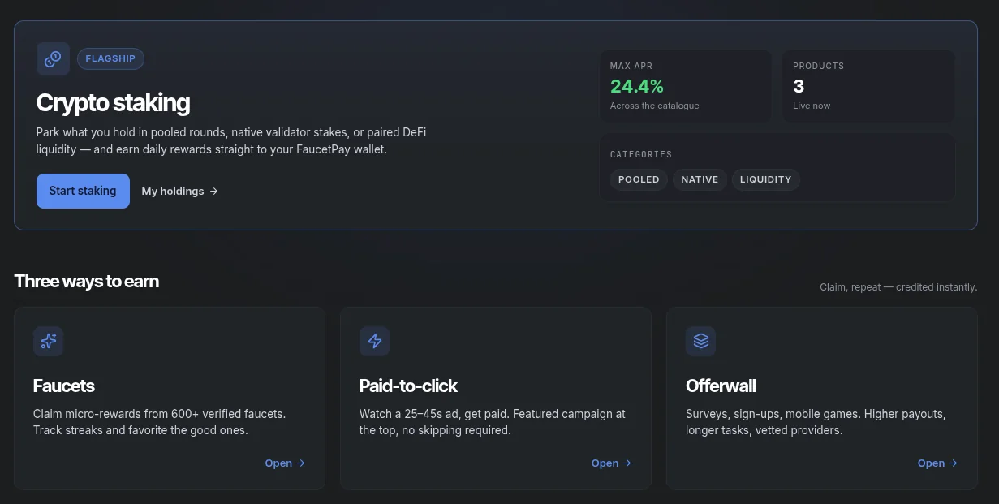
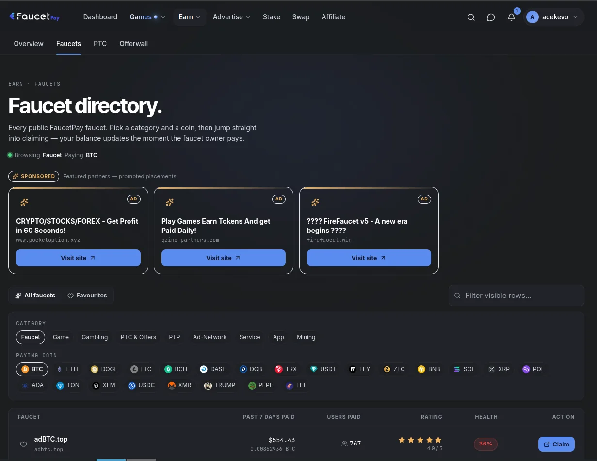

Quick verdict
FaucetPay has not merely changed its colours. The new interface finally treats the service as one connected micro-earning platform: wallet, faucet discovery, PTC, offerwalls and FEY staking now feel like parts of the same product. The dark dashboard is easier to scan, but long-time users will need a few minutes to rebuild their muscle memory.
FaucetPay has rolled out its biggest visual overhaul in years. We logged in, moved through the new earning and wallet screens, and captured the three views most regular faucet users will care about. The familiar functions are still present; the main change is how they are grouped and how much useful information is visible before you click.
The wallet now works like a real dashboard
The wallet overview puts the total estimated value and individual assets in a clear grid. Bitcoin, Ethereum, Litecoin, Dogecoin, Tron, Solana, stablecoins and the smaller supported assets are no longer buried in a plain balance table. Each coin has its own card, and the left navigation keeps Wallet, Earn, Swap, Stake and activity within reach.

This is the strongest part of the redesign. Micro-earners often hold tiny balances across many coins, so recognition matters more than advanced charting. The grid makes it immediately obvious which balances are worth consolidating and which ones have barely moved.
Earn is now the centre of the experience
The new Earn landing screen divides FaucetPay's earning options into three obvious routes: faucets, paid-to-click work and offerwalls. It also gives FEY staking a prominent position rather than treating it as an obscure extra. For a newcomer, that is much clearer than learning the platform through scattered menu links.

The staking card is visually prominent and shows the advertised yield and lock information before you commit. Remember that a polished interface does not remove token risk: FEY's price can move, and an annual percentage yield is not the same as a guaranteed dollar return. Treat staking as a crypto position, not a savings account.
The faucet directory is finally easier to filter
The faucet directory is where the redesign should save the most time. Filters for coin, payout level, verification and other criteria sit above a card-based list, while promoted placements are visibly separated. That makes it easier to compare sites without repeatedly opening tabs just to discover the supported coin or claim interval.

We still recommend the same safety routine: start with a small claim, avoid any faucet demanding a deposit, use a unique password, and withdraw meaningful balances to a wallet you control. “Verified” is a useful screening signal, not a lifetime guarantee that an external site cannot change hands or payment policy.
What actually changed?
The public site also now emphasises default two-factor authentication, an anti-phishing phrase, withdrawal allow-lists with a cooldown for new addresses, and an exportable audit log. Those are more important than the cosmetic changes. If your existing account is not using every available security control, the redesign is a good excuse to review it.
What has not changed
Faucet earnings remain tiny. A better directory can reduce wasted time, but it cannot turn fractions of a cent into a wage. Network withdrawal fees still matter, external faucets still have their own rules, and the safest approach is still to test platforms with small amounts before investing serious time.
FaucetPay-to-FaucetPay transfers remain the useful part of the model: small rewards can accumulate off-chain until they are large enough to move economically. That is why FaucetPay continues to be central to a practical faucet stack even when individual faucets come and go.
Our verdict after the update
A meaningful upgrade
The redesign makes FaucetPay easier for beginners without removing the tools regular users need. The wallet grid and faucet filters are genuine usability improvements; the staking promotion deserves the same caution as any token yield product. Existing users should spend ten minutes checking 2FA, their anti-phishing phrase, withdrawal addresses and session history before returning to their normal routine.
For the full platform background, fees and setup steps, read our FaucetPay review and microwallet guide.